Docker主机集群化方案 Docker Swarm¶
一、docker swarm介绍¶
Docker Swarm是Docker官方提供的一款集群管理工具，其主要作用是把若干台Docker主机抽象为一个整体，并且通过一个入口统一管理这些Docker主机上的各种Docker资源。Swarm和Kubernetes比较类似，但是更加轻，具有的功能也较kubernetes更少一些。
- 是docker host集群管理工具
- docker官方提供的
- docker 1.12版本以后
- 用来统一集群管理的，把整个集群资源做统一调度
- 比kubernetes要轻量化
- 实现scaling 规模扩大或缩小
- 实现rolling update 滚动更新或版本回退
- 实现service discovery 服务发现
- 实现load balance 负载均衡
- 实现route mesh 路由网格，服务治理
二、docker swarm概念与架构¶
2.1 架构¶

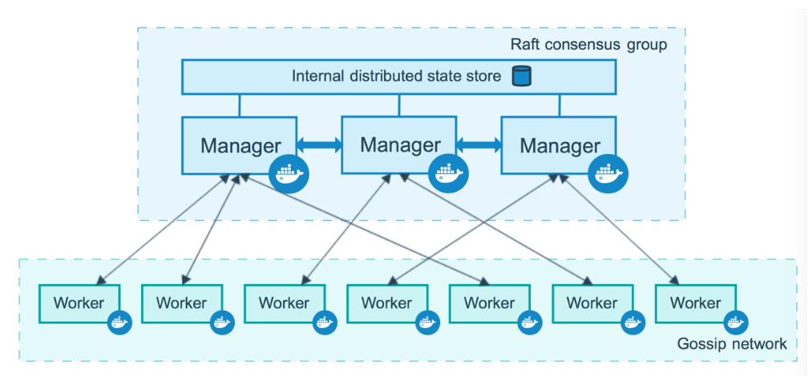
2.2 概念¶
节点 (node): 就是一台docker host上面运行了docker engine.节点分为两类:
- 管理节点(manager node) 负责管理集群中的节点并向工作节点分配任务
- 工作节点(worker node) 接收管理节点分配的任务，运行任务
# docker node ls
服务(services): 在工作节点运行的，由多个任务共同组成
# docker service ls
任务(task): 运行在工作节点上容器或容器中包含应用，是集群中调度最小管理单元
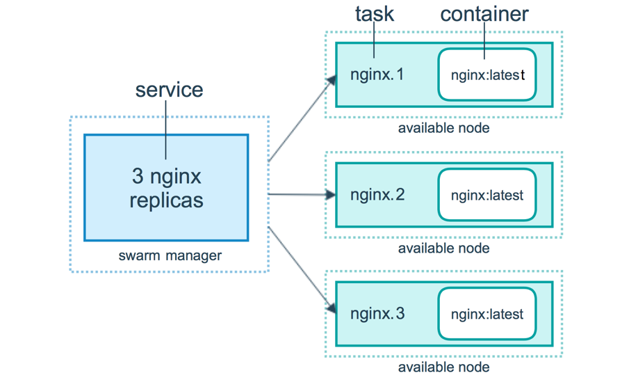
三、docker swarm集群部署¶
部署3主2从节点集群，另需提前准备1台本地容器镜像仓库服务器(Harbor)
3.1 容器镜像仓库 Harbor准备¶
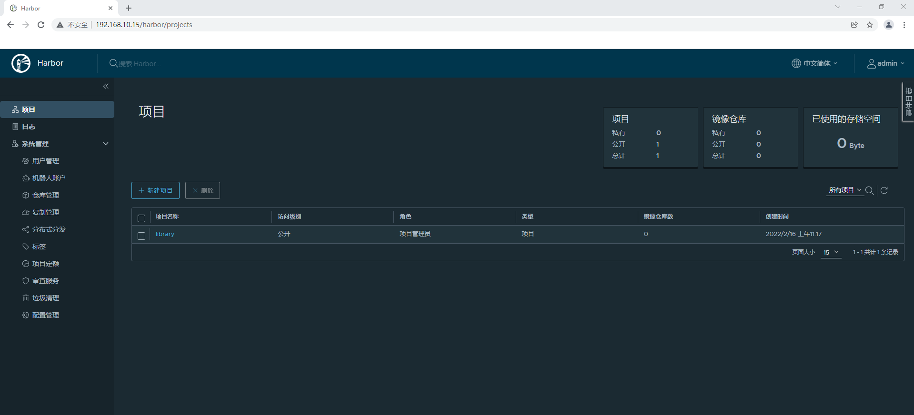
3.2 主机准备¶
3.2.1 主机名¶
# hostnamectl set-hostname xxx
说明：
sm1 管理节点1
sm2 管理节点2
sm3 管理节点3
sw1 工作节点1
sw2 工作节点2
3.2.2 IP地址¶
编辑网卡配置文件
# vim /etc/sysconfig/network-scripts/ifcfg-ens33
# cat /etc/sysconfig/network-scripts/ifcfg-ens33
TYPE="Ethernet"
PROXY_METHOD="none"
BROWSER_ONLY="no"
BOOTPROTO="none" 修改为静态
DEFROUTE="yes"
IPV4_FAILURE_FATAL="no"
IPV6INIT="yes"
IPV6_AUTOCONF="yes"
IPV6_DEFROUTE="yes"
IPV6_FAILURE_FATAL="no"
IPV6_ADDR_GEN_MODE="stable-privacy"
NAME="ens33"
DEVICE="ens33"
ONBOOT="yes"
添加如下内容：
IPADDR="192.168.10.xxx"
PREFIX="24"
GATEWAY="192.168.10.2"
DNS1="119.29.29.29"
说明：
sm1 管理节点1 192.168.10.10
sm2 管理节点2 192.168.10.11
sm3 管理节点3 192.168.10.12
sw1 工作节点1 192.168.10.13
sw2 工作节点2 192.168.10.14
3.2.3 主机名与IP地址解析¶
编辑主机/etc/hosts文件，添加主机名解析
# vim /etc/hosts
# cat /etc/hosts
127.0.0.1 localhost localhost.localdomain localhost4 localhost4.localdomain4
::1 localhost localhost.localdomain localhost6 localhost6.localdomain6
192.168.10.10 sm1
192.168.10.11 sm2
192.168.10.12 sm3
192.168.10.13 sw1
192.168.10.14 sw2
3.3.4 主机时间同步¶
添加计划任务，实现时间同步，同步服务器为time1.aliyun.com
# crontab -e
no crontab for root - using an empty one
crontab: installing new crontab
查看添加后计划任务
# crontab -l
0 */1 * * * ntpdate time1.aliyun.com
3.2.5 主机安全设置¶
关闭防火墙并查看其运行状态
# systemctl stop firewalld;systemctl disable firewalld
# firewall-cmd --state
not running
使用非交互式修改selinux配置文件
# sed -ri 's/SELINUX=enforcing/SELINUX=disabled/' /etc/selinux/config
重启所有的主机系统
# reboot
重启后验证selinux是否关闭
# sestatus
SELinux status: disabled
3.3 docker安装¶
3.3.1 docker安装¶
下载YUM源
# wget -O /etc/yum.repos.d/docker-ce.repo https://mirrors.aliyun.com/docker-ce/linux/centos/docker-ce.repo
安装docker-ce
# yum -y install docker-ce
启动docker服务并设置为开机自启动
# systemctl enable docker;systemctl start docker
3.3.2 配置docker daemon使用harbor¶
添加daemon.json文件，配置docker daemon使用harbor
# vim /etc/docker/daemon.json
# cat /etc/docker/daemon.json
{
"insecure-registries": ["http://192.168.10.15"]
}
重启docker服务
# ystemctl restart docker
深度登录harbor
# docker login 192.168.10.15
Username: admin
Password: 12345
WARNING! Your password will be stored unencrypted in /root/.docker/config.json.
Configure a credential helper to remove this warning. See
https://docs.docker.com/engine/reference/commandline/login/#credentials-store
Login Succeeded
3.4 docker swarm集群初始化¶
3.4.1 获取docker swarm命令帮助¶
获取docker swarm命令使用帮助
# docker swarm --help
Usage: docker swarm COMMAND
Manage Swarm
Commands:
ca Display and rotate the root CA
init Initialize a swarm 初始化
join Join a swarm as a node and/or manager 加入集群
join-token Manage join tokens 集群加入时token管理
leave Leave the swarm 离开集群
unlock Unlock swarm
unlock-key Manage the unlock key
update Update the swarm 更新集群
3.4.2 在管理节点初始化¶
本次在sm1上初始化
初始化集群
# docker swarm init --advertise-addr 192.168.10.10 --listen-addr 192.168.10.10:2377
Swarm initialized: current node (j42cwubrr70pwxdpmesn1cuo6) is now a manager.
To add a worker to this swarm, run the following command:
docker swarm join --token SWMTKN-1-297iry1n2jeh30oopsjecvsco1uuvl15t2jz6jxabdpf0xkry4-6pddlyiq5f1i35w8d7q4bl1co 192.168.10.10:2377
To add a manager to this swarm, run 'docker swarm join-token manager' and follow the instructions.
说明：
--advertise-addr 当主机有多块网卡时使用其选择其中一块用于广播,用于其它节点连接管理节点使用
--listen-addr 监听地址，用于承载集群流量使用
3.4.3 添加工作节点到集群¶
使用初始化过程中生成的token加入集群
[root@sw1 ~]# docker swarm join --token SWMTKN-1-297iry1n2jeh30oopsjecvsco1uuvl15t2jz6jxabdpf0xkry4-6pddlyiq5f1i35w8d7q4bl1co 192.168.10.10:2377
This node joined a swarm as a worker.
查看已加入的集群
# docker node ls
ID HOSTNAME STATUS AVAILABILITY MANAGER STATUS ENGINE VERSION
j42cwubrr70pwxdpmesn1cuo6 * sm1 Ready Active Leader 20.10.12
4yb34kuma6i9g5hf30vkxm9yc sw1 Ready Active 20.10.12
如果使用的token已过期，可以再次生成新的加入集群的方法，如下命令所示。
重新生成用于添加工作点的token
[root@sm1 ~]# docker swarm join-token worker
To add a worker to this swarm, run the following command:
docker swarm join --token SWMTKN-1-297iry1n2jeh30oopsjecvsco1uuvl15t2jz6jxabdpf0xkry4-6pddlyiq5f1i35w8d7q4bl1co 192.168.10.10:2377
加入至集群
[root@sw2 ~]# docker swarm join --token SWMTKN-1-297iry1n2jeh30oopsjecvsco1uuvl15t2jz6jxabdpf0xkry4-6pddlyiq5f1i35w8d7q4bl1co 192.168.10.10:2377
This node joined a swarm as a worker.
查看node状态
# docker node ls
ID HOSTNAME STATUS AVAILABILITY MANAGER STATUS ENGINE VERSION
j42cwubrr70pwxdpmesn1cuo6 * sm1 Ready Active Leader 20.10.12
4yb34kuma6i9g5hf30vkxm9yc sw1 Ready Active 20.10.12
mekitdu1xbpcttgupwuoiwg91 sw2 Ready Active 20.10.12
3.4.4 添加管理节点到集群¶
生成用于添加管理节点加入集群所使用的token
[root@sm1 ~]# docker swarm join-token manager
To add a manager to this swarm, run the following command:
docker swarm join --token SWMTKN-1-297iry1n2jeh30oopsjecvsco1uuvl15t2jz6jxabdpf0xkry4-7g85apo82mwz8ttmgdr7onfhu 192.168.10.10:2377
加入集群
[root@sm2 ~]# docker swarm join --token SWMTKN-1-297iry1n2jeh30oopsjecvsco1uuvl15t2jz6jxabdpf0xkry4-7g85apo82mwz8ttmgdr7onfhu 192.168.10.10:2377
This node joined a swarm as a manager.
加入集群
[root@sm3 ~]# docker swarm join --token SWMTKN-1-297iry1n2jeh30oopsjecvsco1uuvl15t2jz6jxabdpf0xkry4-7g85apo82mwz8ttmgdr7onfhu 192.168.10.10:2377
This node joined a swarm as a manager.
查看节点状态
# docker node ls
ID HOSTNAME STATUS AVAILABILITY MANAGER STATUS ENGINE VERSION
j42cwubrr70pwxdpmesn1cuo6 * sm1 Ready Active Leader 20.10.12
nzpmehm8n87b9a17or2el10lc sm2 Ready Active Reachable 20.10.12
xc2x9z1b33rwdfxc5sdpobf0i sm3 Ready Active Reachable 20.10.12
4yb34kuma6i9g5hf30vkxm9yc sw1 Ready Active 20.10.12
mekitdu1xbpcttgupwuoiwg91 sw2 Ready Active 20.10.12
3.4.5 模拟管理节点出现故障¶
3.4.5.1 停止docker服务并查看结果¶
停止docker服务
[root@sm1 ~]# systemctl stop docker
查看node状态，发现sm1不可达，状态为未知，并重启选择出leader
[root@sm2 ~]# docker node ls
ID HOSTNAME STATUS AVAILABILITY MANAGER STATUS ENGINE VERSION
j42cwubrr70pwxdpmesn1cuo6 sm1 Unknown Active Unreachable 20.10.12
nzpmehm8n87b9a17or2el10lc * sm2 Ready Active Leader 20.10.12
xc2x9z1b33rwdfxc5sdpobf0i sm3 Ready Active Reachable 20.10.12
4yb34kuma6i9g5hf30vkxm9yc sw1 Ready Active 20.10.12
mekitdu1xbpcttgupwuoiwg91 sw2 Ready Active 20.10.12
3.4.5.2 启动docker服务并查看结果¶
再次重动docker
[root@sm1 ~]# systemctl start docker
观察可以得知sm1是可达状态，但并不是Leader
[root@sm1 ~]# docker node ls
ID HOSTNAME STATUS AVAILABILITY MANAGER STATUS ENGINE VERSION
j42cwubrr70pwxdpmesn1cuo6 * sm1 Ready Active Reachable 20.10.12
nzpmehm8n87b9a17or2el10lc sm2 Ready Active Leader 20.10.12
xc2x9z1b33rwdfxc5sdpobf0i sm3 Ready Active Reachable 20.10.12
4yb34kuma6i9g5hf30vkxm9yc sw1 Ready Active 20.10.12
mekitdu1xbpcttgupwuoiwg91 sw2 Ready Active 20.10.12
四、docker swarm集群应用¶
4.1 容器镜像准备¶
准备多个版本的容器镜像，以便于后期使用测试。
4.1.1 v1版本¶
生成网站文件v1版
[root@harbor nginximg]# vim index.html
[root@harbor nginximg]# cat index.html
v1
编写Dockerfile文件，用于构建容器镜像
[root@harbor nginximg]# vim Dockerfile
[root@harbor nginximg]# cat Dockerfile
FROM nginx:latest
MAINTAINER 'tom<tom@kubemsb.com>'
ADD index.html /usr/share/nginx/html
RUN echo "daemon off;" >> /etc/nginx/nginx.conf
EXPOSE 80
CMD /usr/sbin/nginx
使用docker build构建容器镜像
[root@harbor nginximg]# docker build -t 192.168.10.15/library/nginx:v1 .
登录harbor
# docker login 192.168.10.15
Username: admin
Password: 12345
推送容器镜像至harbor
# docker push 192.168.10.15/library/nginx:v1
4.1.2 v2版本¶
生成网站文件v2版
[root@harbor nginximg]# vim index.html
[root@harbor nginximg]# cat index.html
v2
编写Dockerfile文件，用于构建容器镜像
[root@harbor nginximg]# vim Dockerfile
[root@harbor nginximg]# cat Dockerfile
FROM nginx:latest
MAINTAINER 'tom<tom@kubemsb.com>'
ADD index.html /usr/share/nginx/html
RUN echo "daemon off;" >> /etc/nginx/nginx.conf
EXPOSE 80
CMD /usr/sbin/nginx
使用docker build构建容器镜像
[root@harbor nginximg]# docker build -t 192.168.10.15/library/nginx:v2 .
推送镜像至Harbor
[root@harbor nginximg]# docker push 192.168.10.15/library/nginx:v2
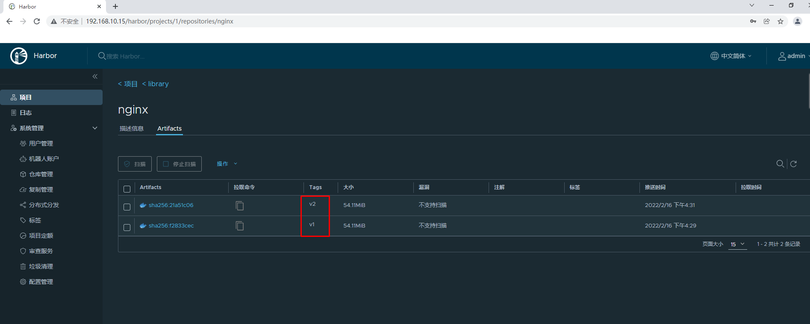
4.2 发布服务¶
在docker swarm中,对外暴露的是服务（service)，而不是容器。
为了保持高可用架构，它准许同时启动多个容器共同支撑一个服务，如果一个容器挂了，它会自动使用另一个容器
4.2.1 使用docker service ls查看服务¶
在管理节点（manager node）上操作
[root@sm1 ~]# docker service ls
ID NAME MODE REPLICAS IMAGE PORTS
4.2.2 发布服务¶
[root@sm1 ~]# docker service create --name nginx-svc-1 --replicas 1 --publish 80:80 192.168.10.15/library/nginx:v1
ucif0ibkjqrd7meal6vqwnduz
overall progress: 1 out of 1 tasks
1/1: running [==================================================>]
verify: Service converged
说明
* 创建一个服务,名为nginx_svc-1
* replicas 1指定1个副本
* --publish 80:80 将服务内部的80端口发布到外部网络的80端口
* 使用的镜像为`192.168.10.15/library/nginx:v1`
4.2.3 查看已发布服务¶
[root@sm1 ~]# docker service ls
ID NAME MODE REPLICAS IMAGE PORTS
ucif0ibkjqrd nginx-svc-1 replicated 1/1 192.168.10.15/library/nginx:v1 *:80->80/tcp
4.2.4 查看已发布服务容器¶
[root@sm1 ~]# docker service ps nginx-svc-1
ID NAME IMAGE NODE DESIRED STATE CURRENT STATE ERROR PORTS
47t0s0egf6xf nginx-svc-1.1 192.168.10.15/library/nginx:v1 sw1 Running Running 48 minutes ago
[root@sw1 ~]# docker ps
CONTAINER ID IMAGE COMMAND CREATED STATUS PORTS NAMES
1bdf8981f511 192.168.10.15/library/nginx:v1 "/docker-entrypoint.…" 53 minutes ago Up 53 minutes 80/tcp nginx-svc-1.1.47t0s0egf6xf1n8m0c0jez3q0
4.2.5 访问已发布的服务¶
[root@sm1 ~]# curl http://192.168.10.10
v1
[root@sm1 ~]# curl http://192.168.10.11
v1
[root@sm1 ~]# curl http://192.168.10.12
v1
[root@sm1 ~]# curl http://192.168.10.13
v1
[root@sm1 ~]# curl http://192.168.10.14
v1
在集群之外的主机访问
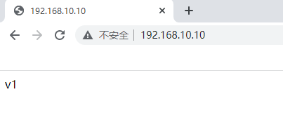
4.3 服务扩展¶
使用scale指定副本数来扩展
[root@sm1 ~]# docker service scale nginx-svc-1=2
nginx-svc-1 scaled to 2
overall progress: 2 out of 2 tasks
1/2: running [==================================================>]
2/2: running [==================================================>]
verify: Service converged
[root@sm1 ~]# docker service ls
ID NAME MODE REPLICAS IMAGE PORTS
ucif0ibkjqrd nginx-svc-1 replicated 2/2 192.168.10.15/library/nginx:v1 *:80->80/tcp
[root@sm1 ~]# docker service ps nginx-svc-1
ID NAME IMAGE NODE DESIRED STATE CURRENT STATE ERROR PORTS
47t0s0egf6xf nginx-svc-1.1 192.168.10.15/library/nginx:v1 sw1 Running Running about an hour ago
oy16nuh5udn0 nginx-svc-1.2 192.168.10.15/library/nginx:v1 sw2 Running Running 57 seconds ago
[root@sw1 ~]# docker ps
CONTAINER ID IMAGE COMMAND CREATED STATUS PORTS NAMES
1bdf8981f511 192.168.10.15/library/nginx:v1 "/docker-entrypoint.…" About an hour ago Up About an hour 80/tcp nginx-svc-1.1.47t0s0egf6xf1n8m0c0jez3q0
[root@sw2 ~]# docker ps
CONTAINER ID IMAGE COMMAND CREATED STATUS PORTS NAMES
0923c0d10223 192.168.10.15/library/nginx:v1 "/docker-entrypoint.…" About a minute ago Up About a minute 80/tcp nginx-svc-1.2.oy16nuh5udn0s1hda5bcpr9hd
问题：现在仅扩展为2个副本，如果把服务扩展到3个副本，集群会如何分配主机呢？
[root@sm1 ~]# docker service scale nginx-svc-1=3
nginx-svc-1 scaled to 3
overall progress: 3 out of 3 tasks
1/3: running [==================================================>]
2/3: running [==================================================>]
3/3: running [==================================================>]
verify: Service converged
[root@sm1 ~]# docker service ps nginx-svc-1
ID NAME IMAGE NODE DESIRED STATE CURRENT STATE ERROR PORTS
47t0s0egf6xf nginx-svc-1.1 192.168.10.15/library/nginx:v1 sw1 Running Running about an hour ago
oy16nuh5udn0 nginx-svc-1.2 192.168.10.15/library/nginx:v1 sw2 Running Running 12 minutes ago
mn9fwxqbc9d1 nginx-svc-1.3 192.168.10.15/library/nginx:v1 sm1 Running Running 9 minutes ago
说明：
当把服务扩展到一定数量时，管理节点也会参与到负载运行中来。
4.4 服务裁减¶
[root@sm1 ~]# docker service scale nginx-svc-1=2
nginx-svc-1 scaled to 2
overall progress: 2 out of 2 tasks
1/2: running [==================================================>]
2/2: running [==================================================>]
verify: Service converged
[root@sm1 ~]# docker service ls
ID NAME MODE REPLICAS IMAGE PORTS
ucif0ibkjqrd nginx-svc-1 replicated 2/2 192.168.10.15/library/nginx:v1 *:80->80/tcp
[root@sm1 ~]# docker service ps nginx-svc-1
ID NAME IMAGE NODE DESIRED STATE CURRENT STATE ERROR PORTS
47t0s0egf6xf nginx-svc-1.1 192.168.10.15/library/nginx:v1 sw1 Running Running 2 hours ago
oy16nuh5udn0 nginx-svc-1.2 192.168.10.15/library/nginx:v1 sw2 Running Running 29 minutes ago
4.5 负载均衡¶
服务中包含多个容器时，每次访问将以轮询的方式访问到每个容器
修改sw1主机中容器网页文件
[root@sw1 ~]# docker ps
CONTAINER ID IMAGE COMMAND CREATED STATUS PORTS NAMES
1bdf8981f511 192.168.10.15/library/nginx:v1 "/docker-entrypoint.…" About an hour ago Up About an hour 80/tcp nginx-svc-1.1.47t0s0egf6xf1n8m0c0jez3q0
[root@sw1 ~]# docker exec -it 1bdf bash
root@1bdf8981f511:/# echo "sw1 web" > /usr/share/nginx/html/index.html
root@1bdf8981f511:/# exit
修改sw2主机中容器网页文件
[root@sw2 ~]# docker ps
CONTAINER ID IMAGE COMMAND CREATED STATUS PORTS NAMES
0923c0d10223 192.168.10.15/library/nginx:v1 "/docker-entrypoint.…" 42 minutes ago Up 42 minutes 80/tcp nginx-svc-1.2.oy16nuh5udn0s1hda5bcpr9hd
[root@sw2 ~]# docker exec -it 0923 bash
root@0923c0d10223:/# echo "sw2 web" > /usr/share/nginx/html/index.html
root@0923c0d10223:/# exit
[root@sm1 ~]# curl http://192.168.10.10
sw1 web
[root@sm1 ~]# curl http://192.168.10.10
sw2 web
[root@sm1 ~]# curl http://192.168.10.10
sw1 web
[root@sm1 ~]# curl http://192.168.10.10
sw2 web
4.6 删除服务¶
[root@sm1 ~]# docker service ls
ID NAME MODE REPLICAS IMAGE PORTS
ucif0ibkjqrd nginx-svc-1 replicated 2/2 192.168.10.15/library/nginx:v1 *:80->80/tcp
[root@sm1 ~]# docker service rm nginx-svc-1
nginx-svc-1
[root@sm1 ~]# docker service ls
ID NAME MODE REPLICAS IMAGE PORTS
4.7 服务版本更新¶
[root@sm1 ~]# docker service create --name nginx-svc --replicas=1 --publish 80:80 192.168.10.15/library/nginx:v1
yz3wq6f1cgf10vtq5ne4qfwjz
overall progress: 1 out of 1 tasks
1/1: running [==================================================>]
verify: Service converged
[root@sm1 ~]# curl http://192.168.10.10
v1
[root@sm1 ~]# docker service update nginx-svc --image 192.168.10.15/library/nginx:v2
nginx-svc
overall progress: 1 out of 1 tasks
1/1: running [==================================================>]
verify: Service converged
[root@sm1 ~]# curl http://192.168.10.10
v2
4.8 服务版本回退¶
[root@sm1 ~]# docker service update nginx-svc --image 192.168.10.15/library/nginx:v1
nginx-svc
overall progress: 1 out of 1 tasks
1/1: running [==================================================>]
verify: Service converged
4.9 服务版本滚动间隔更新¶
# docker service create --name nginx-svc --replicas 60 --publish 80:80 192.168.10.15/library/nginx:v1
pqrt561dckg2wfpect3vf9ll0
overall progress: 60 out of 60 tasks
verify: Service converged
[root@sm1 ~]# docker service update --replicas 60 --image 192.168.10.15/library/nginx:v2 --update-parallelism 5 --update-delay 30s nginx-svc
nginx-svc
overall progress: 3 out of 3 tasks
1/3: running [==================================================>]
2/3: running [==================================================>]
3/3: running [==================================================>]
verify: Service converged
说明
* --update-parallelism 5 指定并行更新数量
* --update-delay 30s 指定更新间隔时间
docker swarm滚动更新会造成节点上有exit状态的容器,可以考虑清除
命令如下：
[root@sw1 ~]# docker container prune
WARNING! This will remove all stopped containers.
Are you sure you want to continue? [y/N] y
4.10 副本控制器¶
副本控制器
[root@sm1 ~]# docker service ls
ID NAME MODE REPLICAS IMAGE PORTS
yz3wq6f1cgf1 nginx-svc replicated 3/3 192.168.10.15/library/nginx:v2 *:80->80/tcp
[root@sm1 ~]# docker service ps nginx-svc
ID NAME IMAGE NODE DESIRED STATE CURRENT STATE ERROR PORTS
x78l0santsbb nginx-svc.1 192.168.10.15/library/nginx:v2 sw2 Running Running 3 hours ago
ura9isskfxku \_ nginx-svc.1 192.168.10.15/library/nginx:v1 sm1 Shutdown Shutdown 3 hours ago
z738gvgazish \_ nginx-svc.1 192.168.10.15/library/nginx:v2 sw1 Shutdown Shutdown 3 hours ago
3qsrkkxn32bl \_ nginx-svc.1 192.168.10.15/library/nginx:v1 sm3 Shutdown Shutdown 3 hours ago
psbi0mxu3amy nginx-svc.2 192.168.10.15/library/nginx:v2 sw1 Running Running 3 hours ago
zpjw39bwhd78 nginx-svc.3 192.168.10.15/library/nginx:v2 sm1 Running Running 3 hours ago
[root@sm1 ~]# docker ps
CONTAINER ID IMAGE COMMAND CREATED STATUS PORTS NAMES
81fffd9132d8 192.168.10.15/library/nginx:v2 "/docker-entrypoint.…" 3 hours ago Up 3 hours 80/tcp nginx-svc.3.zpjw39bwhd78pw49svpy4q8zd
[root@sm1 ~]# docker stop 81fffd9132d8;docker rm 81fffd9132d8
81fffd9132d8
81fffd9132d8
[root@sm1 ~]# docker service ls
ID NAME MODE REPLICAS IMAGE PORTS
yz3wq6f1cgf1 nginx-svc replicated 3/3 192.168.10.15/library/nginx:v2 *:80->80/tcp
[root@sm1 ~]# docker service ps nginx-svc
ID NAME IMAGE NODE DESIRED STATE CURRENT STATE ERROR PORTS
x78l0santsbb nginx-svc.1 192.168.10.15/library/nginx:v2 sw2 Running Running 3 hours ago
ura9isskfxku \_ nginx-svc.1 192.168.10.15/library/nginx:v1 sm1 Shutdown Shutdown 3 hours ago
z738gvgazish \_ nginx-svc.1 192.168.10.15/library/nginx:v2 sw1 Shutdown Shutdown 3 hours ago
3qsrkkxn32bl \_ nginx-svc.1 192.168.10.15/library/nginx:v1 sm3 Shutdown Shutdown 3 hours ago
psbi0mxu3amy nginx-svc.2 192.168.10.15/library/nginx:v2 sw1 Running Running 3 hours ago
qv6ya3crz1fj nginx-svc.3 192.168.10.15/library/nginx:v2 sm1 Running Running 13 seconds ago
zpjw39bwhd78 \_ nginx-svc.3 192.168.10.15/library/nginx:v2 sm1 Shutdown Failed 19 seconds ago "task: non-zero exit (137)"
4.11 在指定网络中发布服务¶
[root@sm1 ~]# docker network create -d overlay tomcat-net
mrkgccdfddy8zg92ja6fpox7p
[root@sm1 ~]# docker network ls
NETWORK ID NAME DRIVER SCOPE
5ba369c13795 bridge bridge local
54568abb541a docker_gwbridge bridge local
4edcb5c4a324 host host local
l6xmfxiiseqk ingress overlay swarm
5d06d748c9c7 none null local
mrkgccdfddy8 tomcat-net overlay swarm
[root@sm1 ~]# docker network inspect tomcat-net
[
{
"Name": "tomcat-net",
"Id": "mrkgccdfddy8zg92ja6fpox7p",
"Created": "2022-02-16T13:56:52.338589006Z",
"Scope": "swarm",
"Driver": "overlay",
"EnableIPv6": false,
"IPAM": {
"Driver": "default",
"Options": null,
"Config": [
{
"Subnet": "10.0.1.0/24",
"Gateway": "10.0.1.1"
}
]
},
"Internal": false,
"Attachable": false,
"Ingress": false,
"ConfigFrom": {
"Network": ""
},
"ConfigOnly": false,
"Containers": null,
"Options": {
"com.docker.network.driver.overlay.vxlanid_list": "4097"
},
"Labels": null
}
]
说明：
创建名为tomcat-net的覆盖网络(Overlay Netowork)，这是个二层网络，处于该网络下的docker容器，即使宿主机不一样，也能相互访问
# docker service create --name tomcat \
--network tomcat-net \
-p 8080:8080 \
--replicas 2 \
tomcat:7.0.96-jdk8-openjdk
说明：
创建名为tomcat的服务，使用了刚才创建的覆盖网络
[root@sm1 ~]# docker service ls
ID NAME MODE REPLICAS IMAGE PORTS
wgqkz8vymxkr tomcat replicated 2/2 tomcat:7.0.96-jdk8-openjdk *:8080->8080/tcp
[root@sm1 ~]# docker service ps tomcat
ID NAME IMAGE NODE DESIRED STATE CURRENT STATE ERROR PORTS
fsx1fnssbmtg tomcat.1 tomcat:7.0.96-jdk8-openjdk sm3 Running Running 49 seconds ago
gq0ogycj7orb tomcat.2 tomcat:7.0.96-jdk8-openjdk sm2 Running Running 58 seconds ago
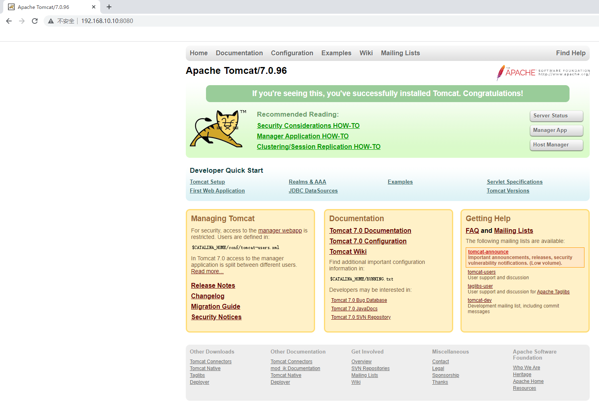
4.12 服务网络模式¶
-
服务模式一共有两种：Ingress和Host，如果不指定，则默认的是Ingress；
-
Ingress模式下，到达Swarm任何节点的8080端口的流量，都会映射到任何服务副本的内部80端口，就算该节点上没有tomcat服务副本也会映射；
# docker service create --name tomcat \
--network tomcat-net \
-p 8080:8080 \
--replicas 2 \
tomcat:7.0.96-jdk8-openjdk
[root@sm1 ~]# docker service ps tomcat
ID NAME IMAGE NODE DESIRED STATE CURRENT STATE ERROR PORTS
fsx1fnssbmtg tomcat.1 tomcat:7.0.96-jdk8-openjdk sm3 Running Running 8 minutes ago
gq0ogycj7orb tomcat.2 tomcat:7.0.96-jdk8-openjdk sm2 Running Running 8 minutes ago
[root@sm2 ~]# docker ps
CONTAINER ID IMAGE COMMAND CREATED STATUS PORTS NAMES
f650498c8e71 tomcat:7.0.96-jdk8-openjdk "catalina.sh run" 9 minutes ago Up 9 minutes 8080/tcp tomcat.2.gq0ogycj7orbu4ua1dwk140as
[root@sm2 ~]# docker inspect f650498c8e71 | grep IPAddress
"SecondaryIPAddresses": null,
"IPAddress": "",
"IPAddress": "10.0.0.24", ingress IP地址
"IPAddress": "10.0.1.9", 容器IP地址
[root@sm3 ~]# docker ps
CONTAINER ID IMAGE COMMAND CREATED STATUS PORTS NAMES
9d0c412717d7 tomcat:7.0.96-jdk8-openjdk "catalina.sh run" 9 minutes ago Up 9 minutes 8080/tcp tomcat.1.fsx1fnssbmtgv3qh84fgqknlh
[root@sm3 ~]# docker inspect 9d0c412717d7 | grep IPAddress
"SecondaryIPAddresses": null,
"IPAddress": "",
"IPAddress": "10.0.0.23",
"IPAddress": "10.0.1.8",
[root@sm1 ~]# ss -anput | grep ":8080"
tcp LISTEN 0 128 [::]:8080 [::]:* users:(("dockerd",pid=2727,fd=54))
[root@sm2 ~]# ss -anput | grep ":8080"
tcp LISTEN 0 128 [::]:8080 [::]:* users:(("dockerd",pid=1229,fd=26))
[root@sm3 ~]# ss -anput | grep ":8080"
tcp LISTEN 0 128 [::]:8080 [::]:* users:(("dockerd",pid=1226,fd=22))
[root@sw1 ~]# ss -anput | grep ":8080"
tcp LISTEN 0 128 [::]:8080 [::]:* users:(("dockerd",pid=1229,fd=39))
[root@sw2 ~]# ss -anput | grep ":8080"
tcp LISTEN 0 128 [::]:8080 [::]:* users:(("dockerd",pid=1229,fd=22))
- Host模式下，仅在运行有容器副本的机器上开放端口，使用Host模式的命令如下：
# docker service create --name tomcat \
--network tomcat-net \
--publish published=8080,target=8080,mode=host \
--replicas 3 \
tomcat:7.0.96-jdk8-openjdk
[root@sm1 ~]# docker service ps tomcat
ID NAME IMAGE NODE DESIRED STATE CURRENT STATE ERROR PORTS
x6022h0oungs tomcat.1 tomcat:7.0.96-jdk8-openjdk sw1 Running Running 19 seconds ago *:8080->8080/tcp,*:8080->8080/tcp
jmnthwqi6ubf tomcat.2 tomcat:7.0.96-jdk8-openjdk sm1 Running Running 18 seconds ago *:8080->8080/tcp,*:8080->8080/tcp
nvcbijnfy2es tomcat.3 tomcat:7.0.96-jdk8-openjdk sw2 Running Running 19 seconds ago *:8080->8080/tcp,*:8080->8080/tcp
[root@sm1 ~]# ss -anput | grep ":8080"
tcp LISTEN 0 128 *:8080 *:* users:(("docker-proxy",pid=20963,fd=4))
tcp LISTEN 0 128 [::]:8080 [::]:* users:(("docker-proxy",pid=20967,fd=4))
[root@sw1 ~]# ss -anput | grep ":8080"
tcp LISTEN 0 128 *:8080 *:* users:(("docker-proxy",pid=20459,fd=4))
tcp LISTEN 0 128 [::]:8080 [::]:* users:(("docker-proxy",pid=20463,fd=4))
[root@sw2 ~]# ss -anput | grep ":8080"
tcp LISTEN 0 128 *:8080 *:* users:(("docker-proxy",pid=19938,fd=4))
tcp LISTEN 0 128 [::]:8080 [::]:* users:(("docker-proxy",pid=19942,fd=4))
没有被映射端口
[root@sm2 ~]# ss -anput | grep ":8080"
[root@sm3 ~]# ss -anput | grep ":8080"
4.13 服务数据持久化存储¶
4.13.1 本地存储¶
4.13.1.1 在集群所有主机上创建本地目录¶
# mkdir -p /data/nginxdata
4.13.1.2 发布服务时挂载本地目录到容器中¶
[root@sm1 ~]# docker service create --name nginx-svc --replicas 3 --mount "type=bind,source=/data/nginxdata,target=/usr/share/nginx/html" --publish 80:80 192.168.10.15/library/nginx:v1
s31z75rniv4p53ycbqch3xbqm
overall progress: 3 out of 3 tasks
1/3: running [==================================================>]
2/3: running [==================================================>]
3/3: running [==================================================>]
verify: Service converged
4.13.1.3 验证是否使用本地目录¶
[root@sm1 ~]# docker service ls
ID NAME MODE REPLICAS IMAGE PORTS
s31z75rniv4p nginx-svc replicated 3/3 192.168.10.15/library/nginx:v1 *:80->80/tcp
[root@sm1 ~]# docker service ps nginx-svc
ID NAME IMAGE NODE DESIRED STATE CURRENT STATE ERROR PORTS
vgfhk4lksbtp nginx-svc.1 192.168.10.15/library/nginx:v1 sm2 Running Running 54 seconds ago
v2bs9araxeuc nginx-svc.2 192.168.10.15/library/nginx:v1 sw2 Running Running 59 seconds ago
1m7fobr3cscz nginx-svc.3 192.168.10.15/library/nginx:v1 sm3 Running Running 59 seconds ago
[root@sm2 ~]# ls /data/nginxdata/
[root@sm2 ~]# echo "sm2 web" > /data/nginxdata/index.html
[root@sm3 ~]# ls /data/nginxdata/
[root@sm3 ~]# echo "sm3 web" > /data/nginxdata/index.html
[root@sw2 ~]# ls /data/nginxdata
[root@sw2 ~]# echo "sw2 web" > /data/nginxdata/index.html
[root@sm1 ~]# curl http://192.168.10.10
sm2 web
[root@sm1 ~]# curl http://192.168.10.10
sm3 web
[root@sm1 ~]# curl http://192.168.10.10
sw2 web
存在数据一致性问题
4.13.2 网络存储¶
- 网络存储卷可以实现跨docker宿主机的数据共享,数据持久保存到网络存储卷中
- 在创建service时添加卷的挂载参数,网络存储卷可以帮助自动挂载(但需要集群节点都创建该网络存储卷)
4.13.2.1 部署NFS存储¶
本案例以NFS提供远程存储为例
在192.168.10.15服务器上部署NFS服务，共享目录为docker swarm集群主机使用。
[root@harbor ~]# mkdir /opt/dockervolume
[root@harbor ~]# yum -y install nfs-utils
[root@harbor ~]# vim /etc/exports
[root@harbor ~]# cat /etc/exports
/opt/dockervolume *(rw,sync,no_root_squash)
[root@harbor ~]# systemctl enable nfs-server
[root@harbor ~]# systemctl start nfs-server
[root@harbor ~]# showmount -e
Export list for harbor:
/opt/dockervolume *
4.13.2.2 为集群所有主机安装nfs-utils软件¶
# yum -y install nfs-utils
# showmount -e 192.168.10.15
Export list for 192.168.10.15:
/opt/dockervolume *
4.13.2.3 创建存储卷¶
集群中所有节点
# docker volume create --driver local --opt type=nfs --opt o=addr=192.168.10.15,rw --opt device=:/opt/dockervolume nginx_volume
nginx_volume
# docker volume ls
DRIVER VOLUME NAME
local nginx_volume
# docker volume inspect nginx_volume
[
{
"CreatedAt": "2022-02-16T23:29:11+08:00",
"Driver": "local",
"Labels": {},
"Mountpoint": "/var/lib/docker/volumes/nginx_volume/_data",
"Name": "nginx_volume",
"Options": {
"device": ":/opt/dockervolume",
"o": "addr=192.168.10.15,rw",
"type": "nfs"
},
"Scope": "local"
}
]
4.13.2.4 发布服务¶
[root@sm1 ~]# docker service create --name nginx-svc --replicas 3 --publish 80:80 --mount "type=volume,source=nginx_volume,target=/usr/share/nginx/html" 192.168.10.15/library/nginx:v1
uh6k84b87n8vciuirln4zqb4v
overall progress: 3 out of 3 tasks
1/3: running [==================================================>]
2/3: running [==================================================>]
3/3: running [==================================================>]
verify: Service converged
4.13.2.5 验证¶
[root@sm1 ~]# docker service ls
ID NAME MODE REPLICAS IMAGE PORTS
uh6k84b87n8v nginx-svc replicated 3/3 192.168.10.15/library/nginx:v1 *:80->80/tcp
[root@sm1 ~]# docker service ps nginx-svc
ID NAME IMAGE NODE DESIRED STATE CURRENT STATE ERROR PORTS
k2vxpav5oadf nginx-svc.1 192.168.10.15/library/nginx:v1 sw2 Running Running 43 seconds ago
v8fh0r89wt5i nginx-svc.2 192.168.10.15/library/nginx:v1 sw1 Running Running 43 seconds ago
xb0nyft8ou4d nginx-svc.3 192.168.10.15/library/nginx:v1 sm1 Running Running 43 seconds ago
[root@sm1 ~]# df -Th | grep nfs
:/opt/dockervolume nfs 50G 8.9G 42G 18% /var/lib/docker/volumes/nginx_volume/_data
[root@sw1 ~]# df -Th | grep nfs
:/opt/dockervolume nfs 50G 8.9G 42G 18% /var/lib/docker/volumes/nginx_volume/_data
[root@sw2 ~]# df -Th | grep nfs
:/opt/dockervolume nfs 50G 8.9G 42G 18% /var/lib/docker/volumes/nginx_volume/_data
[root@harbor ~]# echo "nfs test" > /opt/dockervolume/index.html
[root@sm1 ~]# curl http://192.168.10.10
nfs test
[root@sm1 ~]# curl http://192.168.10.11
nfs test
[root@sm1 ~]# curl http://192.168.10.12
nfs test
[root@sm1 ~]# curl http://192.168.10.13
nfs test
[root@sm1 ~]# curl http://192.168.10.14
nfs test
4.14 服务互联与服务发现¶
如果一个nginx服务与一个mysql服务之间需要连接,在docker swarm如何实现呢?
方法1:
把mysql服务也使用 --publish参数发布到外网,但这样做的缺点是:mysql这种服务发布到外网不安全
方法2:
将mysql服务等运行在内部网络,只需要nginx服务能够连接mysql就可以了,在docker swarm中可以使用==overlay==网络来实现。
但现在还有个问题,服务副本数发生变化时,容器内部的IP发生变化时,我们希望仍然能够访问到这个服务, 这就是**服务发现（service discovery)**.
通过服务发现, service的使用者都不需要知道service运行在哪里,IP是多少,有多少个副本,就能让service通信
下面使用docker network ls查看到的ingress网络就是一个overlay类型的网络,但它不支持服务发现
[root@sm1 ~]# docker network ls
NETWORK ID NAME DRIVER SCOPE
5ba369c13795 bridge bridge local
54568abb541a docker_gwbridge bridge local
4edcb5c4a324 host host local
l6xmfxiiseqk ingress overlay swarm 此处
5d06d748c9c7 none null local
mrkgccdfddy8 tomcat-net overlay swarm
我们**需要自建一个overlay网络来实现服务发现, 需要相互通信的service也必须属于同一个overlay网络**
[root@sm1 ~]# docker network create --driver overlay --subnet 192.168.100.0/24 self-network
ejpf8zzig5rjsgefqucopcsdt
说明:
- --driver overlay指定为overlay类型
- --subnet 分配网段
- self-network 为自定义的网络名称
[root@sm1 ~]# docker network ls
NETWORK ID NAME DRIVER SCOPE
5ba369c13795 bridge bridge local
54568abb541a docker_gwbridge bridge local
4edcb5c4a324 host host local
l6xmfxiiseqk ingress overlay swarm
5d06d748c9c7 none null local
ejpf8zzig5rj self-network overlay swarm 此处
mrkgccdfddy8 tomcat-net overlay swarm
验证自动发现
1, 发布nignx-svc服务,指定在自建的overlay网络
[root@sm1 ~]# docker service create --name nginx-svc --replicas 3 --network self-network --publish 80:80 192.168.10.15/library/nginx:v1
rr21tvm1xpi6vk3ic83tfy9e5
overall progress: 3 out of 3 tasks
1/3: running [==================================================>]
2/3: running [==================================================>]
3/3: running [==================================================>]
verify: Service converged
2, 发布一个busybox服务,也指定在自建的overlay网络
[root@sm1 ~]# docker service create --name test --network self-network busybox sleep 100000
w14lzhhzdyqwt18lrby4euw98
overall progress: 1 out of 1 tasks
1/1: running [==================================================>]
verify: Service converged
说明:
-
服务名为test
-
busybox是一个集成了linux常用命令的软件,这里使用它可以比较方便的测试与nginx_service的连通性
- 没有指定副本,默认1个副本
- 因为它并不是长时间运行的daemon守护进程,所以运行一下就会退出.sleep 100000是指定一个长的运行时间,让它有足够的时间给我们测试
3, 查出test服务在哪个节点运行的容器
[root@sm1 ~]# docker service ps test
ID NAME IMAGE NODE DESIRED STATE CURRENT STATE ERROR PORTS
x8nkifpdtyw5 test.1 busybox:latest sm2 Running Running about a minute ago
4, 去运行test服务的容器节点查找容器的名称
[root@sm2 ~]# docker ps
CONTAINER ID IMAGE COMMAND CREATED STATUS PORTS NAMES
8df13819bd5c busybox:latest "sleep 100000" About a minute ago Up About a minute test.1.x8nkifpdtyw5177zhr0r1lxad
5, 使用查找出来的容器名称,执行命令测试
[root@sm2 ~]# docker exec -it test.1.x8nkifpdtyw5177zhr0r1lxad ping -c 2 nginx-svc
PING nginx-svc (192.168.100.2): 56 data bytes
64 bytes from 192.168.100.2: seq=0 ttl=64 time=0.093 ms
64 bytes from 192.168.100.2: seq=1 ttl=64 time=0.162 ms
--- nginx-svc ping statistics ---
2 packets transmitted, 2 packets received, 0% packet loss
round-trip min/avg/max = 0.093/0.127/0.162 ms
测试的结果为: test服务可以ping通nginx_service服务,并且返回的IP为自建网络的一个IP(192.168.100.2)
[root@sm1 ~]# docker service inspect nginx-svc
[
......
"VirtualIPs": [
{
"NetworkID": "l6xmfxiiseqkl57wnsm4cykps",
"Addr": "10.0.0.36/24"
},
{
"NetworkID": "ejpf8zzig5rjsgefqucopcsdt",
"Addr": "192.168.100.2/24" 与此处IP地址保持一致。
}
]
}
}
]
6, 分别去各个节点查找nginx_service服务的各个容器(3个副本),发现它们的IP与上面ping的IP都不同
[root@sm1 ~]# docker inspect nginx-svc.1.6nxixaw3tn2ld3vklfjldnpl5 | grep IPAddress
"SecondaryIPAddresses": null,
"IPAddress": "",
"IPAddress": "10.0.0.37",
"IPAddress": "192.168.100.3",
[root@sw1 ~]# docker inspect nginx-svc.3.steywkaxfboynglx4bsji6jd1 | grep -i ipaddress
"SecondaryIPAddresses": null,
"IPAddress": "",
"IPAddress": "10.0.0.39",
"IPAddress": "192.168.100.5",
[root@sw2 ~]# docker inspect nginx-svc.2.rz1iifb9eg0tos7r59cbesucd | grep -i ipaddress
"SecondaryIPAddresses": null,
"IPAddress": "",
"IPAddress": "10.0.0.38",
"IPAddress": "192.168.100.4",
7, 后续测试, 将nginx_service服务扩展,裁减,更新,回退.都不影响test服务访问nginx-svc。
结论: 在自建的overlay网络内,通过服务发现可以实现服务之间通过服务名(不用知道对方的IP)互联,而且不会受服务内副本个数和容器内IP变化等的影响。
4.15 docker swarm网络¶
在 Swarm Service 中有三个重要的网络概念：
- Overlay networks 管理 Swarm 中 Docker 守护进程间的通信。你可以将服务附加到一个或多个已存在的
overlay网络上，使得服务与服务之间能够通信。 - ingress network 是一个特殊的
overlay网络，用于服务节点间的负载均衡。当任何 Swarm 节点在发布的端口上接收到请求时，它将该请求交给一个名为IPVS的模块。IPVS跟踪参与该服务的所有IP地址，选择其中的一个，并通过ingress网络将请求路由到它。 初始化或加入 Swarm 集群时会自动创建ingress网络，大多数情况下，用户不需要自定义配置，但是 docker 17.05 和更高版本允许你自定义。 - **docker_gwbridge**是一种桥接网络，将
overlay网络（包括ingress网络）连接到一个单独的 Docker 守护进程的物理网络。默认情况下，服务正在运行的每个容器都连接到本地 Docker 守护进程主机的docker_gwbridge网络。docker_gwbridge网络在初始化或加入 Swarm 时自动创建。大多数情况下，用户不需要自定义配置，但是 Docker 允许自定义。
| 名称 | 类型 | 注释 |
|---|---|---|
| docker_gwbridge | bridge | none |
| ingress | overlay | none |
| custom-network | overlay | none |
-
docker_gwbridge和ingress是swarm自动创建的，当用户执行了docker swarm init/connect之后。
-
docker_gwbridge是bridge类型的负责本机container和主机直接的连接
-
ingress负责service在多个主机container之间的路由。
-
custom-network是用户自己创建的overlay网络，通常我们都需要创建自己的network并把service挂在上面。

五、docker stack¶
5.1 docker stack介绍¶
早期使用service发布，每次只能发布一个service。
yaml可以发布多个服务，但是使用docker-compose只能在一台主机发布。
一个stack就是一组有关联的服务的组合，可以一起编排，一起发布, 一起管理
5.2 docker stack与docker compose区别¶
- Docker stack会忽略了“构建”指令，无法使用stack命令构建新镜像，它是需要镜像是预先已经构建好的。 所以docker-compose更适合于开发场景；
- Docker Compose是一个Python项目，在内部，它使用Docker API规范来操作容器。所以需要安装Docker -compose，以便与Docker一起在您的计算机上使用；
- Docker Stack功能包含在Docker引擎中。你不需要安装额外的包来使用它，docker stacks 只是swarm mode的一部分。
- Docker stack不支持基于第2版写的docker-compose.yml ，也就是version版本至少为3。然而Docker Compose对版本为2和3的 文件仍然可以处理；
- docker stack把docker compose的所有工作都做完了，因此docker stack将占主导地位。同时，对于大多数用户来说，切换到使用docker stack既不困难，也不需要太多的开销。如果您是Docker新手，或正在选择用于新项目的技术，请使用docker stack。
5.3 docker stack常用命令¶
| 命令 | 描述 |
|---|---|
| docker stack deploy | 部署新的堆栈或更新现有堆栈 |
| docker stack ls | 列出现有堆栈 |
| docker stack ps | 列出堆栈中的任务 |
| docker stack rm | 删除一个或多个堆栈 |
| docker stack services | 列出堆栈中的服务 |
5.4 部署wordpress案例¶
1, 编写YAML文件
[root@sm1 ~]# vim stack1.yaml
[root@sm1 ~]# cat stack1.yaml
version: '3'
services:
db:
image: mysql:5.7
environment:
MYSQL_ROOT_PASSWORD: somewordpress
MYSQL_DATABASE: wordpress
MYSQL_USER: wordpress
MYSQL_PASSWORD: wordpress
deploy:
replicas: 1
wordpress:
depends_on:
- db
image: wordpress:latest
ports:
- "8010:80"
environment:
WORDPRESS_DB_HOST: db:3306
WORDPRESS_DB_USER: wordpress
WORDPRESS_DB_PASSWORD: wordpress
WORDPRESS_DB_NAME: wordpress
deploy:
replicas: 1
placement:
constraints: [node.role == manager]
说明:
- placement的constraints限制此容器在manager节点
2, 使用docker stack发布
[root@sm1 ~]# docker stack deploy -c stack1.yaml stack1
Creating network stack1_default 创建自建的overlay网络
Creating service stack1_db 创建stack1_db服务
Creating service stack1_wordpress 创建stack1_wordpress服务
如果报错,使用docker stack rm stack1删除.排完错再启动
[root@sm1 ~]# docker stack ls
NAME SERVICES ORCHESTRATOR
stack1 2 Swarm
[root@sm1 ~]# docker service ls
ID NAME MODE REPLICAS IMAGE PORTS
tw1a8rnde2yr stack1_db replicated 1/1 mysql:5.7
zf1h2r4m12li stack1_wordpress replicated 1/1 wordpress:latest *:8010->80/tcp
3, 验证
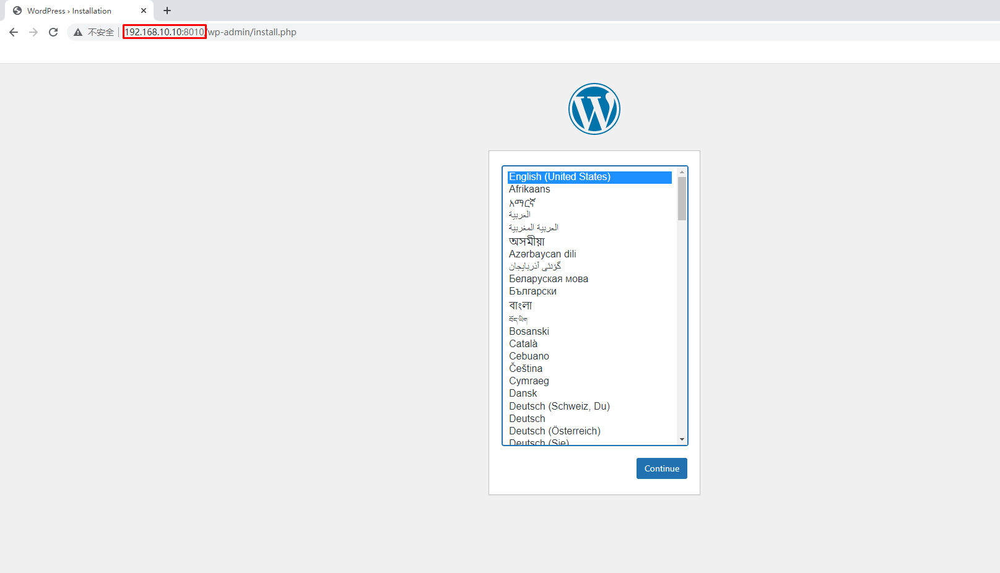
5.5 部署nginx与web管理服务案例¶
1, 编写YAML文件
[root@sm1 ~]# vim stack2.yaml
[root@sm1 ~]# cat stack2.yaml
version: "3"
services:
nginx:
image: 192.168.10.15/library/nginx:v1
ports:
- 80:80
deploy:
mode: replicated
replicas: 3
visualizer:
image: dockersamples/visualizer
ports:
- "9001:8080"
volumes:
- "/var/run/docker.sock:/var/run/docker.sock"
deploy:
replicas: 1
placement:
constraints: [node.role == manager]
portainer:
image: portainer/portainer
ports:
- "9000:9000"
volumes:
- "/var/run/docker.sock:/var/run/docker.sock"
deploy:
replicas: 1
placement:
constraints: [node.role == manager]
说明: stack中共有3个service
- nginx服务,3个副本
- visualizer服务: 图形查看docker swarm集群
- portainer服务: 图形管理docker swarm集群
2,使用docker stack发布
[root@sm1 ~]# docker stack deploy -c stack2.yaml stack2
Creating network stack2_default
Creating service stack2_portainer
Creating service stack2_nginx
Creating service stack2_visualizer
如果报错,使用docker stack rm stack2删除.排完错再启动
[root@sm1 ~]# docker stack ps stack2
ID NAME IMAGE NODE DESIRED STATE CURRENT STATE ERROR PORTS
zpkt1780g2nr stack2_nginx.1 192.168.10.15/library/nginx:v1 sm2 Running Running 54 seconds ago
9iqdgw2fxk0s stack2_nginx.2 192.168.10.15/library/nginx:v1 sm3 Running Running 54 seconds ago
4h0ob7b4ho2a stack2_nginx.3 192.168.10.15/library/nginx:v1 sw2 Running Running 54 seconds ago
jpp7h6qheh4j stack2_portainer.1 portainer/portainer:latest sm1 Running Running 21 seconds ago
ty0mktx60typ stack2_visualizer.1 dockersamples/visualizer:latest sm1 Running Starting 22 seconds ago
3,验证
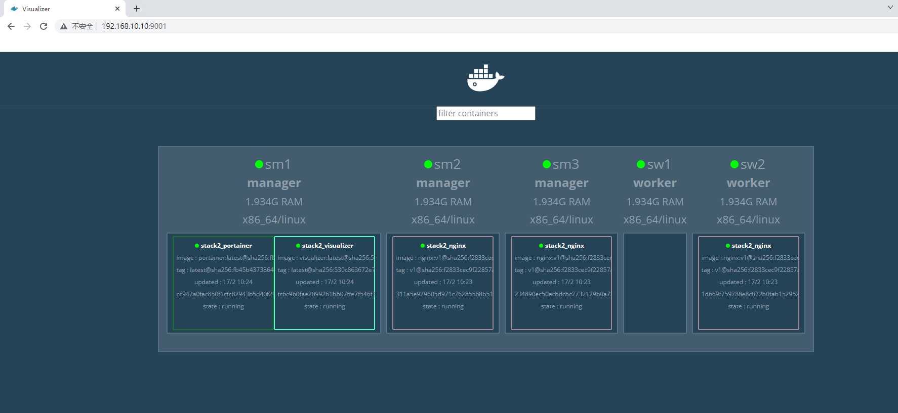
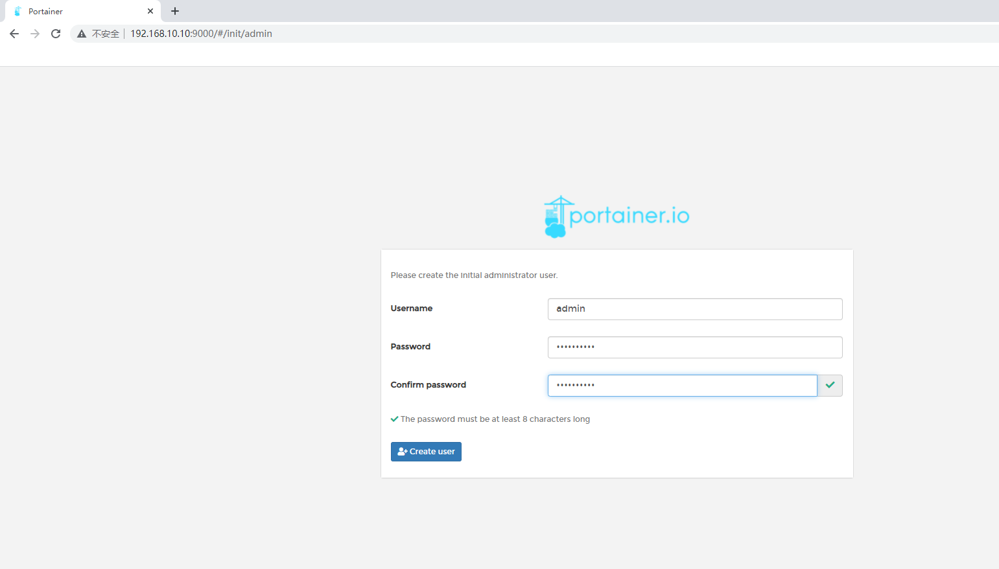
5.6 nginx+haproxy+nfs案例¶
1,在docker swarm管理节点上准备配置文件
[root@sm1 ~]# mkdir -p /docker-stack/haproxy
[root@sm1 ~]# cd /docker-stack/haproxy/
[root@sm1 haproxy]# vim haproxy.cfg
global
log 127.0.0.1 local0
log 127.0.0.1 local1 notice
defaults
log global
mode http
option httplog
option dontlognull
timeout connect 5000ms
timeout client 50000ms
timeout server 50000ms
stats uri /status
frontend balancer
bind *:8080
mode http
default_backend web_backends
backend web_backends
mode http
option forwardfor
balance roundrobin
server web1 nginx1:80 check
server web2 nginx2:80 check
server web3 nginx3:80 check
option httpchk GET /
http-check expect status 200
2, 编写YAML编排文件
[root@sm1 haproxy]# vim stack3.yml
[root@sm1 haproxy]# vim stack3.yaml
[root@sm1 haproxy]# cat stack3.yaml
version: "3"
services:
nginx1:
image: 192.168.10.15/library/nginx:v1
deploy:
mode: replicated
replicas: 1
restart_policy:
condition: on-failure
volumes:
- "nginx_vol:/usr/share/nginx/html"
nginx2:
image: 192.168.10.15/library/nginx:v1
deploy:
mode: replicated
replicas: 1
restart_policy:
condition: on-failure
volumes:
- "nginx_vol:/usr/share/nginx/html"
nginx3:
image: 192.168.10.15/library/nginx:v1
deploy:
mode: replicated
replicas: 1
restart_policy:
condition: on-failure
volumes:
- "nginx_vol:/usr/share/nginx/html"
haproxy:
image: haproxy:latest
volumes:
- "./haproxy.cfg:/usr/local/etc/haproxy/haproxy.cfg:ro"
ports:
- "8080:8080"
deploy:
replicas: 1
placement:
constraints: [node.role == manager]
volumes:
nginx_vol:
driver: local
driver_opts:
type: "nfs"
o: "addr=192.168.10.15,rw"
device: ":/opt/dockervolume"
3, 发布
[root@sm1 haproxy]# docker stack deploy -c stack3.yml stack3
Creating network stack3_default
Creating service stack3_nginx3
Creating service stack3_haproxy
Creating service stack3_nginx1
Creating service stack3_nginx2
4, 验证
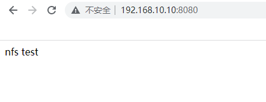
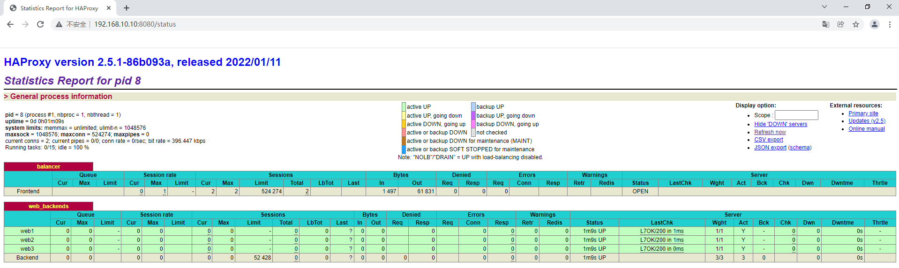